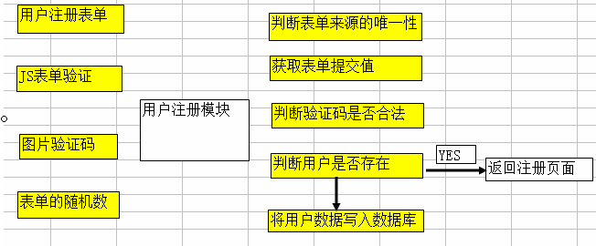

PHP6-day17talk论坛
一、论坛概述
1、论坛功能概述
一个项目，主要由两个部分：网站前端+网站后台
网站前端：HTML结构、CSS样式、JS行为(jQuery、AJAX)，有一个特点：兼容性。
网站后端(网站后台管理)：PHP(脚本程序)、MySQL、文件处理、图片处理、SESSION和COOKIE
论坛功能：用户管理、版块管理、贴子管理、积分管理、头衔管理、文件管理、照片管理、系统设置、分页模块、样式管理等。最流程的论坛Discuz!
我们自己论坛实现的功能：用户管理、贴子管理。
2、论坛的数据表结构
用户、帖子、回帖
3、论坛的文件结构
用户注册模块 用户数据表结构

4、注册页面JS验证
5、把验证码添加到表单中
6、随机字符串作为表单验证依据
7、将用户数据保存到数据库 register_save.php
(判断表单是否提交、获取表单提交值、验证码判断、判断用户是否已经注册、执行插入SQL语句、跳转到成功页面或失败页面)
图片验证码：include/yanzhengma.php
1、生成随机图片验证码，
2、将验证码字符串写入SESSION，./include/yanzhengma.php
PHP连接MySQL数据库：include/conn.php
二、用户登录模块
1、用户数据表结构
2、用户登录流程图

3、用户登录表单主要代码：login.php、login_save.php
4、用户登录数据的处理
(判断表单是否提交、获取表单提交值、判断该用户是否存在、更新用户资料、将用户名和密码写入COOKIE、将用户名和ID写入SESSION)
5、实现自动登录
6、用户登录成功后修改首页的“游客”为“用户名” index.php
7、用户登录成功后将“登录｜注册”修改为“退出”、header.php
8、用户退出功能模块
三、发布贴子(send.php、send_save.php)
1、数据表结构(thread)
2、只有用户会员才可以发贴子
3、加入在线编辑器
在线代码编辑器：FCKEditor、KindEditor等 ，它们主要是用JS开发的。除了上传功能是PHP的功能外，其它功能都是JS实现的。
4、保存贴子的主要代码
四、贴子列表(list.php)
1、数据表结构(user、thread)
2、连表查询
3、贴子列表主要代码
4、数据分页原理
5、单击页码向服务器传递页码参数
6、仿百度分页
五、贴子内容(content.php)
1、数据表结构(thread)
2、传递贴子ID参数
3、贴子内容的主要代码
六、回复贴子(content.php、reply_save.php)
1、数据表结构(reply)
2、回复的表单
3、保存回贴内容
4、读取回贴内容
知识点补充
1、md5()加密码函数
- 描述：计算字符串的 MD5 散列值
- 语法：string md5 ( string $str [, bool $raw_output = false ] )例echo md5("admin");
- 如果可选的 raw_output 被设置为 TRUE，那么 MD5 报文摘要将以16字节长度的原始二进制格式返回
- 返回：以 32 字符十六进制数字形式返回散列值。
2、urlencode()
- 描述：编码 URL 字符串，语法：string urlencode ( string $str )
- 返回：返回字符串，此字符串中除了 -_. 之外的所有非字母数字字符都将被替换成百分号（%）后跟两位十六进制数，空格则编码为加号（+）。
3、urldecode()
- 描述：解码已编码的 URL 字符串
- 语法：string urldecode ( string $str )
4、简单正则表达-字符（具有特殊含义的字符）去验证数据
元字符 | 含义 |
+ | >=1 |
* | >=0 |
? | =0 或 =1 |
\d | 任意数字 |
\D | 非数字 |
\w | 字母、数字、下划线 |
\W | 非字母、数字、下划线 |
. | 除了换行以外的所有字符 |
{3} | 3位长度字符 |
{3,5} | 3-5位的字符 |
{3,} | 大于等于3位的字符 |
\ | 转义字符 |
[2,9] | 字符只能是2或9 |
[2-9] | 字符是2到9之间 |
（） | 将( 和 ) 之间的表达式定义为“组”（group） |
| | 将两个匹配条件进行逻辑“或”（Or）运算 |
<script type="text/javascript">
// var reg=/^\d{7}$|^\d{4}-\d{7}$/; //练习1:匹配一个固话（类似于4378060 或者 0359-4378060 格式的）
// var reg=/^182\d{8}$/; //练习2:匹配开头为182的手机号码
var reg=/^\w+@[a-z0-9A-Z]+\.[a-z0-9A-Z]+$/;//练习3：匹配一个邮箱
document.getElementById('reg').onblur=function(){
alert(reg.test(document.getElementById('reg').value));
}
</script>